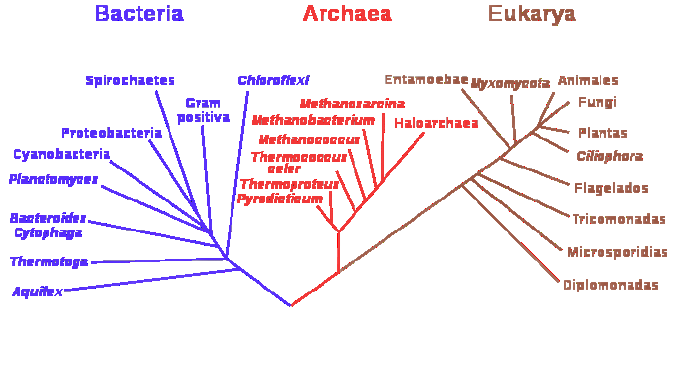

La importancia de los estudios de sistemática filogenética radica en los siguientes aspectos: Que, al encontrar parentescos genéticos entre las especies, permite a la sistemática clasificar a todas las especies y crear una base de datos que permita reconocer a todos los organismos del planeta. Gracias a estos aportes:
Tanto los árboles genealógicos como los filogenéticos tienen un tronco y ramas, pero en los últimos se muestran las relaciones entre especies y no entre individuos. Los árboles filogenéticos se construyen tomando en cuenta la evolución biológica, basándose en la evidencia de que todos los organismos son descendientes de un ancestro común. Así, todos los organismos, ya sean vivos o extintos, se encuentran emparentados en algún grado. En ocasiones se denomina "árbol de la vida" al árbol filogenético que engloba a todos los seres vivos, pasados y presentes.
enraizado es un tipo de árbol directo. Posee un único nódulo correspondiente al ancestro común más reciente de todas las entidades que forman las hojas del árbol.
sin raíz muestra la relación de los nódulos de las hojas, pero sin asumir ningún aspecto de su ascendencia.
Mientras que los árboles sin raíz siempre pueden ser generados a partir de árboles enraizados omitiendo la raíz, una raíz no puede ser inferida a partir de un árbol sin raíz sin algunos medios para identificar la ascendencia. Esto suele hacerse incluyendo un grupo externo en los datos entrantes o introduciendo asunciones adicionales sobre las tasas relativas de evolución en cada rama, como una aplicación de la hipótesis del reloj molecular. Cladograma: árbol formado utilizando métodos cladísticos. Sólo representa un patrón de ramificación, la longitud de sus ramas no representa el tiempo.
Filograma: representa explícitamente un número de cambios de rasgos de carácter a lo largo de la longitud de sus ramas; es el resultado de la aplicación de los principios de la sistemática evolutiva. Fenograma: es un dendrograma no enraizado en que se establecen las relaciones de parentesco fenético de los organismos estudiados; surgen de la aplicación de los métodos de la taxonomía numérica. Cronograma: es un árbol filogenético que representa explícitamente el tiempo evolutivo proporcionalmente a la longitud de sus ramas. Por tanto, de los árboles filogenéticos se obtiene una información muy importante de los diferentes organismos.